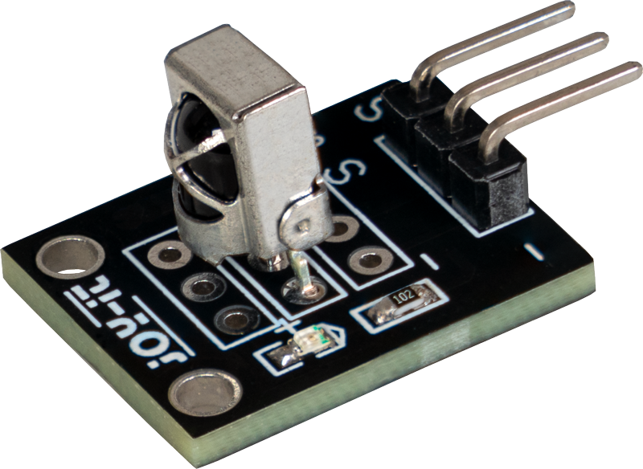
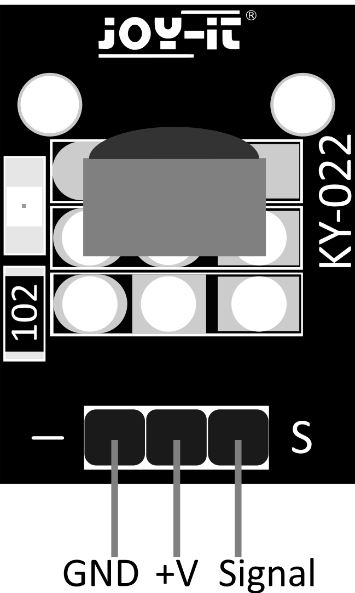
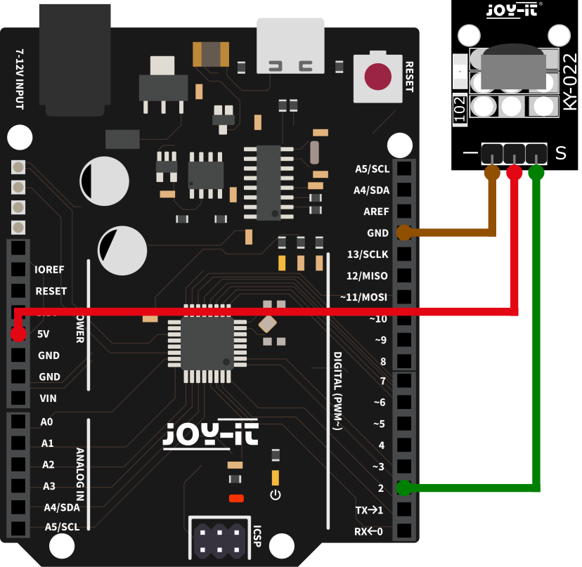

13. Dezember 2026
Bescherung
Dritter Advent – Zeit, schon mal die Bescherung zu proben! Mit dem IR-Empfänger und einer beliebigen Fernbedienung meldest du durch die Tür, wie weit die Vorbereitungen sind.
Heute im Säckchen
KY-022 Infrarot-Receiver
Dieses Modul kann Infrarotsignale empfangen und gibt diese am Signalausgang als digitale Abfolge aus.

Dieses Modul kann Infrarotsignale empfangen und wandelt diese in digitale Signale um, die am Ausgang ausgegeben werden. Wenn ein Infrarotsignal erkannt wird, blinkt eine integrierte LED auf dem Modul kurz auf, was eine visuelle Bestätigung des Signalempfangs bietet. Es ist ideal für Projekte, bei denen Infrarotfernbedienungen oder andere Infrarotsignale verwendet werden. Dank seiner einfachen Handhabung und zuverlässigen Signalverarbeitung lässt sich das Modul leicht in verschiedene Elektronikprojekte integrieren, um beispielsweise Fernsteuerungen zu realisieren oder Daten drahtlos zu übertragen.
| Technische Daten | |
|---|---|
| Betriebsspannung | 3,3 V - 5 V |
| Betriebsstrom | 0,4 - 1,5 mA |
| Empfangsreichweite | 18 m |
| Empfangswinkel | ± 45 ° |
| Trägerfrequenz | 38 kHz |
Anschlussbelegung


| Arduino | Empfänger |
|---|---|
| Pin 2 | Signal |
| 5 V | +V |
| GND | GND |
Bescherung
Bevor die Bescherung losgeht, warten die Kinder vor der Wohnzimmertür. Drinnen meldet jemand mit einer Fernbedienung, wie weit die Vorbereitungen sind, und die RGB-LED von Tag 5 zeigt es draußen an: Rot heißt „die Geschenke werden eingepackt“, Grün „der Baum wird geschmückt“, Blau „die Kerzen werden angezündet“ und Gold „gleich ist es so weit“. Beim nächsten Druck ist Bescherung: Der Buzzer von Tag 6 spielt „Ihr Kinderlein, kommet“.
Verdrahtung
| Komponente | Arduino-Pin | Anschluss am Modul |
|---|---|---|
| KY-022 IR-Empfänger | 2 | Signal |
| KY-022 IR-Empfänger | 5V / GND | +V / GND |
| KY-006 von Tag 6 | 8 | Signal |
| KY-006 von Tag 6 | GND | GND |
| KY-016 von Tag 5 | 9 / 6 / 5 | LED Rot / Grün / Blau (über Vorwiderstände) |
| KY-016 von Tag 5 | GND | GND |
Der Empfänger muss die Fernbedienung „sehen“: Stell den Aufbau so auf, dass er durch die offene Tür oder einen Türspalt zeigt, oder führe die LED an längeren Kabeln nach draußen.
Ablauf
Fast jede Fernbedienung aus dem Wohnzimmer funktioniert, zum Beispiel die vom Fernseher. Welche Taste du drückst, ist egal. Hältst du eine Taste fest, sendet die Fernbedienung Wiederholungen; die zählen nicht als neuer Druck. Störsignale ohne erkennbares Protokoll ignoriert das Programm ebenfalls. Nach dem Lied leuchtet die LED gold, ein weiterer Druck beginnt wieder von vorn.
Der IR-Empfang und tone() benutzen auf dem Arduino Uno denselben Timer. Das Programm pausiert deshalb den Empfang, solange die Melodie spielt.
Bibliothek
Wie im Abschnitt oben: IRremote in Version 4.x.
Deine Knobelaufgabe
Im Programm fehlt der Inhalt der loop()-Funktion. Die Kommentare darin verraten dir, was passieren soll – programmiere es selbst! Die Auflösung findest du morgen ganz unten auf der Seite von Türchen 14.
// Türchen 13: Bescherung
// Bibliothek: IRremote 4.x
#include <IRremote.hpp>
const char ART[] PROGMEM = R"ART(
_______________
| ___________ |
| | | |
| | PSST! | |
| | O | |
| | | | |
| |___________| |
|_______________|
Tuerchen 13: Bescherung
)ART";
const int IR_PIN = 2; // KY-022
const int BUZZER = 8; // KY-006 von Tag 6
const int LED_ROT = 9; // KY-016 von Tag 5
const int LED_GRUEN = 6;
const int LED_BLAU = 5;
const int ACHTEL_MS = 200;
// Die Vorbereitungen hinter der Wohnzimmertür; jeder Tastendruck meldet den nächsten Schritt
struct Schritt {
const char* name;
int r, g, b;
};
const Schritt PROGRAMM[] = {
{"Die Geschenke werden eingepackt ...", 255, 0, 0},
{"Der Baum wird geschmückt ...", 0, 255, 0},
{"Die Kerzen werden angezündet ...", 0, 0, 255},
{"Gleich ist es so weit!", 255, 120, 0},
{"Bescherung!", 0, 0, 0},
};
const int SCHRITTE = sizeof(PROGRAMM) / sizeof(PROGRAMM[0]);
int schritt = -1;
const int T_EB4 = 311, T_F4 = 349, T_G4 = 392, T_AB4 = 415, T_BB4 = 466, T_C5 = 523, T_EB5 = 622, PAUSE = 0;
const int MELODIE[] = {
T_BB4,
T_BB4, T_G4, T_BB4, T_BB4, T_G4, T_BB4, T_AB4, T_F4, T_AB4, T_G4, PAUSE, T_BB4,
T_BB4, T_G4, T_BB4, T_BB4, T_G4, T_BB4, T_AB4, T_F4, T_AB4, T_G4, PAUSE, T_G4,
T_F4, T_F4, T_F4, T_AB4, T_AB4, T_AB4, T_G4, T_G4, T_G4, T_C5, PAUSE, T_C5,
T_BB4, T_BB4, T_BB4, T_EB5, T_BB4, T_G4, T_AB4, T_F4, T_F4, T_EB4, PAUSE
};
// Dauer jedes Tons in Achtelnoten (Auftakt, dann je Takt halbe Note und zwei Viertel)
const byte DAUER[] = {
2,
4, 2, 2, 4, 2, 2, 4, 2, 2, 4, 2, 2,
4, 2, 2, 4, 2, 2, 4, 2, 2, 4, 2, 2,
4, 2, 2, 4, 2, 2, 4, 2, 2, 4, 2, 2,
4, 2, 2, 4, 2, 2, 4, 2, 2, 4, 2
};
const int LAENGE = sizeof(MELODIE) / sizeof(MELODIE[0]);
void setzeFarbe(int r, int g, int b) {
analogWrite(LED_ROT, r);
analogWrite(LED_GRUEN, g);
analogWrite(LED_BLAU, b);
}
// true, wenn eine neue Taste gedrückt wurde (keine Wiederholung beim Festhalten, kein Störsignal)
bool tasteGedrueckt() {
if (!IrReceiver.decode()) {
return false;
}
bool neu = IrReceiver.decodedIRData.protocol != UNKNOWN
&& !(IrReceiver.decodedIRData.flags & IRDATA_FLAGS_IS_REPEAT);
IrReceiver.resume();
return neu;
}
void spieleMelodie() {
// tone() und der IR-Empfang benutzen auf dem Uno denselben Timer:
// Empfang pausieren, solange die Melodie spielt
IrReceiver.stop();
for (int i = 0; i < LAENGE; i++) {
int dauer = DAUER[i] * ACHTEL_MS;
if (MELODIE[i] == PAUSE) {
setzeFarbe(0, 0, 0);
} else {
if (i % 2 == 0) setzeFarbe(255, 0, 0);
else setzeFarbe(255, 120, 0);
tone(BUZZER, MELODIE[i], dauer * 9 / 10);
}
delay(dauer);
}
noTone(BUZZER);
setzeFarbe(255, 120, 0); // nach dem Lied leuchtet es festlich gold
IrReceiver.start();
}
void setup() {
pinMode(BUZZER, OUTPUT);
pinMode(LED_ROT, OUTPUT);
pinMode(LED_GRUEN, OUTPUT);
pinMode(LED_BLAU, OUTPUT);
Serial.begin(9600);
Serial.println((const __FlashStringHelper*)ART);
IrReceiver.begin(IR_PIN, DISABLE_LED_FEEDBACK);
Serial.println("Die Tür bleibt zu! Drinnen meldet jemand mit der Fernbedienung, wie weit es ist.");
}
void loop() {
// Jeder Tastendruck meldet den nächsten Schritt aus PROGRAMM, nach dem letzten
// beginnt es von vorn. Beim letzten Schritt ist Bescherung: Dann spielt die Melodie.
}Grundlagen-Beispiel zu KY-022 Infrarot-Receiver anzeigen
Code-Beispiel
Mit Hilfe der beiden Sensormodule KY-005 und KY-022 lässt sich ein System mit Infrarot-Fernbedienung und Infrarot-Empfänger aufbauen. Hierzu werden neben den beiden Modulen auch zwei Arduinos benötigt. Diese fungieren hierbei dann jeweils als Sender und als Empfänger der Signale.
Mithilfe des Sensormodules KY-022 lässt sich ein Infrarot-Receiver aufbauen. Hierzu werden nur das Infrarot Receiver Modul und ein einzelner Arduino benötigt. Dieser fungiert hierbei dann als Empfänger und gibt die Signale dann in der seriellen Konsole aus.
Um das folgende Codebeispiel auf deinen Arduino zu laden, empfehlen wir die Verwendung der Arduino IDE. In der IDE kannst du den passenden Port und das richtige Board für dein Gerät auswählen. Für das folgende Codebeispiel wird eine zusätzliche Library benötigt:
IRremote von Ken Shirriff | veröffentlicht unter der MIT Lizenz
Diese Bibliotheken kannst du bequem über den Bibliotheken-Manager der Arduino IDE hinzufügen.
Bei Infrarot-Sende- und Empfängersystemen, gibt es verschiedene Protokolle, in denen die Daten versendet und empfangen werden können. In dem folgenden Beispiel wird für das Empfangen das modifizierte SimpleReceiver Beispiel verwendet - die verwendete Library IRremote kümmert sich eigenständig um die Konvertierung in die richtige Datenfolge. Es gibt innerhalb der Library jedoch auch andere Protokolle/Kodierungen - diese sind in der Dokumentation/dem Code der Library gekennzeichnet. Dokumentation
Bitte beachte: Für die Ausführung des Codebeispiels ist eine zusätzliche Datei notwendig. Diese öffnet sich automatisch, sobald du den Beispielcode aus der IRremote-Bibliothek öffnest. Öffne daher zunächst den Beispielcode über den folgenden Weg: Datei > Beispiele > IRremote > SimpleReceiver.
Nun kannst du den Beispielcode durch unser modifiziertes Beispiel ersetzen. Um den Code auf deinen Arduino hochzuladen, klicke einfach auf den Upload-Button.
/*
* SimpleReceiver.cpp
*
* Demonstriert den Empfang von NUR NEC-Protokoll-IR-Codes mit IRremote.
* Wenn kein Protokoll definiert ist, sind alle Protokolle (außer Bang&Olufsen) aktiv.
*
* Diese Datei ist Teil von Arduino-IRremote https://github.com/Arduino-IRremote/Arduino-IRremote.
*
************************************************************************************
* MIT License
*
* Copyright (c) 2020-2023 Armin Joachimsmeyer
*
* Permission is hereby granted, free of charge, to any person obtaining a copy
* of this software and associated documentation files (the "Software"), to deal
* in the Software without restriction, including without limitation the rights
* to use, copy, modify, merge, publish, distribute, sublicense, and/or sell
* copies of the Software, and to permit persons to whom the Software is furnished
* to do so, subject to the following conditions:
*
* The above copyright notice and this permission notice shall be included in all
* copies or substantial portions of the Software.
*
* THE SOFTWARE IS PROVIDED "AS IS", WITHOUT WARRANTY OF ANY KIND, EXPRESS OR IMPLIED,
* INCLUDING BUT NOT LIMITED TO THE WARRANTIES OF MERCHANTABILITY, FITNESS FOR A
* PARTICULAR PURPOSE AND NONINFRINGEMENT. IN NO EVENT SHALL THE AUTHORS OR COPYRIGHT
* HOLDERS BE LIABLE FOR ANY CLAIM, DAMAGES OR OTHER LIABILITY, WHETHER IN AN ACTION OF
* CONTRACT, TORT OR OTHERWISE, ARISING FROM, OUT OF OR IN CONNECTION WITH THE SOFTWARE
* OR THE USE OR OTHER DEALINGS IN THE SOFTWARE.
*
************************************************************************************
*/
#include <Arduino.h>
/*
* Gib an, welche(s) Protokoll(e) für die Dekodierung verwendet werden soll(en).
* Wenn kein Protokoll definiert ist, sind alle Protokolle (außer Bang&Olufsen) aktiv.
* Dies muss vor dem #include <IRremote.hpp> erfolgen.
*/
//#define DECODE_DENON // Beinhaltet Sharp
//#define DECODE_JVC
//#define DECODE_KASEIKYO
//#define DECODE_PANASONIC // Alias für DECODE_KASEIKYO
//#define DECODE_LG
#define DECODE_NEC // Beinhaltet Apple und Onkyo. Um alle Protokolle zu aktivieren, kommentiere/deaktiviere einfach diese Zeile.
//#define DECODE_SAMSUNG
//#define DECODE_SONY
//#define DECODE_RC5
//#define DECODE_RC6
//#define DECODE_BOSEWAVE
//#define DECODE_LEGO_PF
//#define DECODE_MAGIQUEST
//#define DECODE_WHYNTER
//#define DECODE_FAST
//#define DECODE_DISTANCE_WIDTH // Universaldecoder für Impulsabstandsprotokolle
//#define DECODE_HASH // spezieller Decoder für alle Protokolle
//#define DECODE_BEO // Dieses Protokoll muss immer manuell aktiviert werden, d.h. es ist NICHT aktiviert, wenn kein Protokoll definiert ist. Es verhindert die Dekodierung von SONY!
//#define DEBUG // Aktiviere dies, um viele schöne Debug-Ausgaben von den Decodern zu erhalten.
//#define RAW_BUFFER_LENGTH 750 // Für Fernbedienungen von Klimaanlagen sind 750 erforderlich. Standard ist 200.
/*
* Dieses Include definiert die aktuellen Pin-Nummern für Pins wie IR_RECEIVE_PIN, IR_SEND_PIN für viele verschiedene Boards und Architekturen
*/
#include "PinDefinitionsAndMore.h"
#include <IRremote.hpp> // Einbindung der Bibliothek
void setup() {
Serial.begin(115200);
while (!Serial)
; // Warte darauf, dass Serial verfügbar wird. Wird für einige Kerne wegoptimiert.
// Starten des Empfängers und, falls kein 3. Parameter angegeben, Übernahme des LED_BUILTIN-Pins aus der internen Kartendefinition als Standard-Feedback-LED
IrReceiver.begin(IR_RECEIVE_PIN, ENABLE_LED_FEEDBACK);
Serial.println(F("KY-022: Infrarot Empfänger Test"));
Serial.print(F("Bereit zum Empfang von IR-Signalen von Protokollen: "));
printActiveIRProtocols(&Serial);
Serial.println(F("am Pin " STR(IR_RECEIVE_PIN)));
}
void loop() {
/*
* Prüfen, ob empfangene Daten verfügbar sind, und wenn ja, versuchen, sie zu dekodieren.
* Das dekodierte Ergebnis befindet sich in der Struktur IrReceiver.decodedIRData.
*
* z.B. Befehl steht in IrReceiver.decodedIRData.command
* Adresse steht in Befehl steht in IrReceiver.decodedIRData.address
* und bis zu 32 Bit Rohdaten in IrReceiver.decodedIRData.decodedRawData
*/
if (IrReceiver.decode()) {
/*
* Gibt eine Zusammenfassung der empfangenen Daten aus
*/
if (IrReceiver.decodedIRData.protocol == UNKNOWN) {
Serial.println(F("Empfangenes Rauschen oder ein unbekanntes (oder noch nicht aktiviertes) Protokoll"));
// Wir haben hier ein unbekanntes Protokoll, gib erweiterte Informationen aus
IrReceiver.printIRResultRawFormatted(&Serial, true);
IrReceiver.resume(); // Tu es hier, um die Rohdaten für die Ausgabe mit printIRResultRawFormatted() zu erhalten.
}
else {
IrReceiver.resume(); // Frühzeitige Freigabe des Empfangs des nächsten IR-Frames
IrReceiver.printIRResultShort(&Serial);
}
}
}Lösung für Tag 12 anzeigen
// Auflösung zu Türchen 12: Wichteln
const char ART[] PROGMEM = R"ART(
_\/_ _\/_ _\/_
__/_/\_\__ __/_/\_\__ __/_/\_\__
| || | || | || |
|____||____|____||____|____||____|
| || | || | || |
|____||____|____||____|____||____|
Wo ist der Schatz?
Tuerchen 12: Wichteln
)ART";
const int HALL_ANALOG = A0; // KY-024, analoger Ausgang
const int LED_ROT = 9; // KY-016 von Tag 5
const int LED_GRUEN = 6;
const int LED_BLAU = 5;
const int GANZ_NAH = 300; // so viel Abweichung vom Ruhewert heißt: Schatz gefunden
int ruhewert = 512; // Messwert ohne Magnet, wird beim Start ermittelt
int stufeVorher = -1;
const char* const STUFEN[] = {
"Eiskalt ... hier ist nichts.",
"Lauwarm.",
"Warm, schon ganz warm!",
"Heiß! Hier hat der Wichtel den Schatz versteckt!"
};
void setzeFarbe(int r, int g, int b) {
analogWrite(LED_ROT, r);
analogWrite(LED_GRUEN, g);
analogWrite(LED_BLAU, b);
}
void setup() {
pinMode(LED_ROT, OUTPUT);
pinMode(LED_GRUEN, OUTPUT);
pinMode(LED_BLAU, OUTPUT);
Serial.begin(9600);
Serial.println((const __FlashStringHelper*)ART);
// Ruhewert ohne Magnet: Mittelwert aus 50 Messungen
Serial.println("Kalibrierung, bitte den Magneten fernhalten ...");
long summe = 0;
for (int i = 0; i < 50; i++) {
summe += analogRead(HALL_ANALOG);
delay(10);
}
ruhewert = summe / 50;
Serial.println("Fertig! Lass jemanden den Magneten verstecken und geh auf Schatzsuche.");
}
void loop() {
int abweichung = analogRead(HALL_ANALOG) - ruhewert;
abweichung = abs(abweichung); // Nord- und Südpol zählen gleich
float naehe = constrain(abweichung / (float)GANZ_NAH, 0.0, 1.0);
// Weit weg kalt (blau), ganz nah heiß (rot)
setzeFarbe(naehe * 255, 0, (1.0 - naehe) * 255);
// Text nur ausgeben, wenn sich die Stufe ändert
int stufe = min((int)(naehe * 4), 3);
if (stufe != stufeVorher) {
Serial.println(STUFEN[stufe]);
stufeVorher = stufe;
}
delay(100);
}